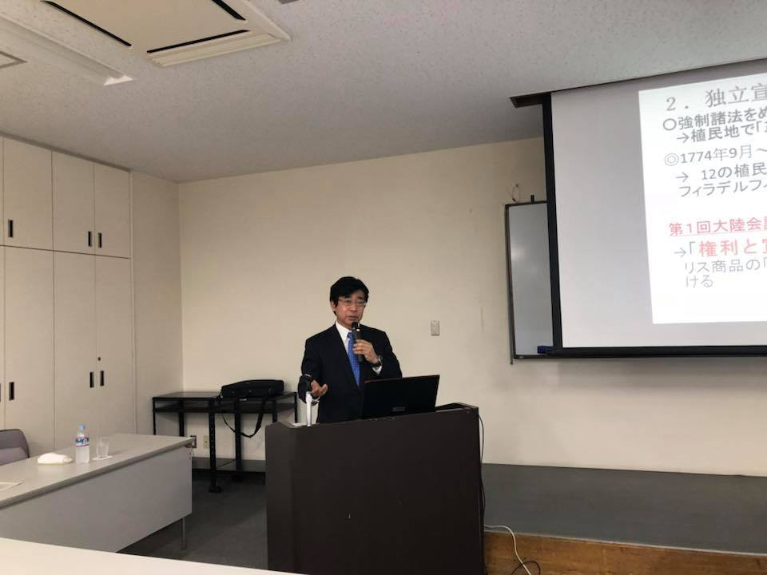
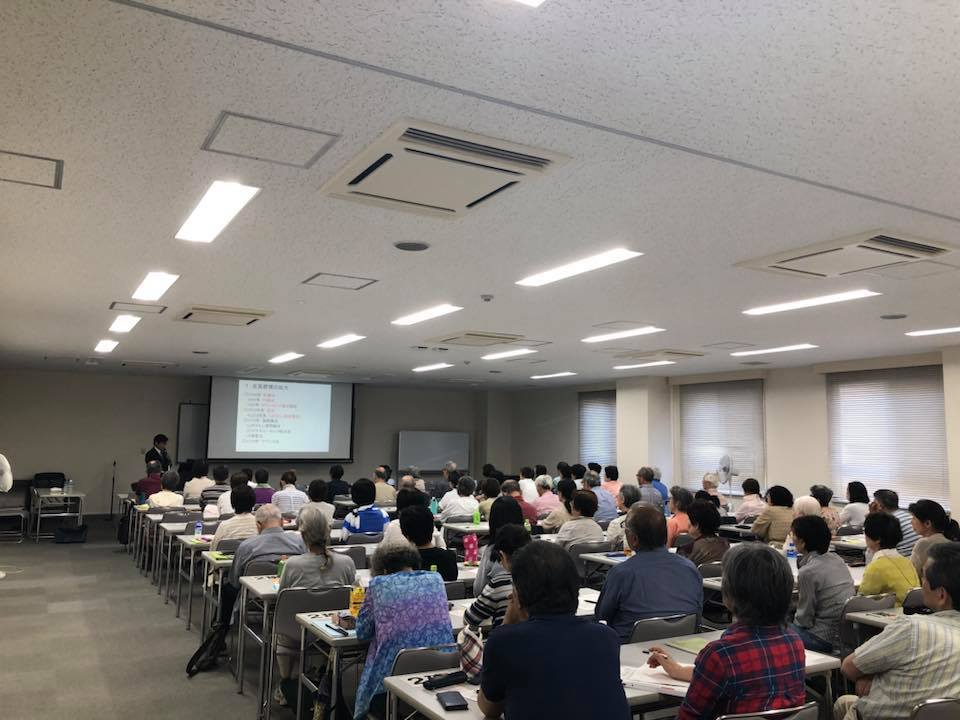
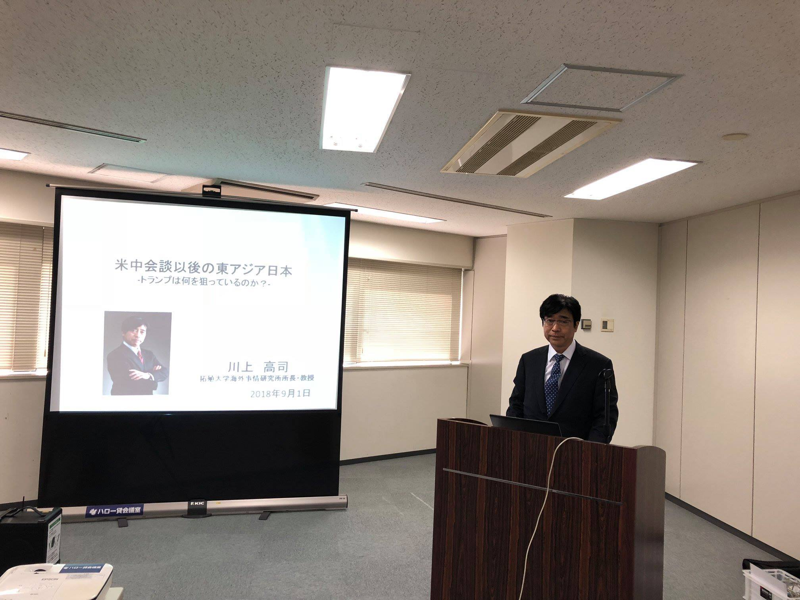
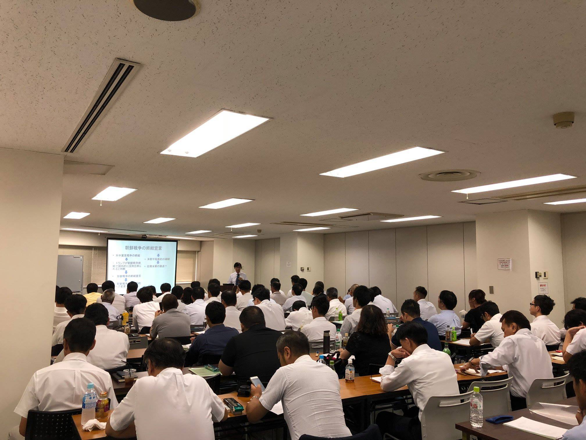

研究活動
- 第1回講演会（2018年2月27日）
- 第2回講演会（2018年4月10日）
- 第3回講演会（2018年6月9日）
- 第4回講演会（2018年8月21日）
- 第5回講演会（2018年10月9日）
- 第6回講演会（2018年12月3日）
- 第7回講演会（2019年2月6日）
- 第8回講演会（2019年4月24日）
- 特別講演会（2019年6月14日）
- 第9回講演会（2019年7月30日）
- 第10回講演会（2019年10月4日）
- 特別講演会（2019年11月20日）
- 第11回講演会（2019年11月29日）
- 特別討論会（2020年1月30日）
- 10周年セミナー「20年後の台湾と日本の対応」（2021年11月24日）
- 「朝鮮半島有事」を想定した「ポリミリゲーム」（2018年1月20日）
- 「国の在り方を考える文化カフェ」（2018年9月13日）
- 「国の在り方を考える文化カフェ」（2019年5月17日）
- 「国の在り方を考える文化カフェ」（2018年11月28日）
- 「国の在り方を考える文化カフェ」（2019年1月15日）
- 「国の在り方を考える文化カフェ」（2019年3月25日）
- 鈴木くにこ評議員、海上保安庁設立70周年式典参加（2018年5月20日）
- 川上高司理事長、講演会（2018年6月4日）
- 川上高司理事長、講演会（2018年9月1日）
その他の活動
実績報告
＜2018年5月20日＞
鈴木くにこ評議員が、海上保安庁設立70周年式典に参加しました。
式典では、船艇などのパレードや避難者救助訓練、テロ制圧訓練などが公開されました。


実績報告
＜2018年6月４日＞
川上高司理事長が品川区立中小企業センターにて、「世界と日本の今を知るー第4回アメリカという国」と題し、講演しました。
アメリカ建国の歴史を振り返り、その背景にある宗教や民族、制度などを紐解くことによって、今のアメリカの政策にどのように影響しているか解説しました。
講演会には多くの方々が集まり、盛況のうちに終了しました。


実績報告
＜2018年9月1日＞
川上高司理事長が、政策研究フォーラム主催の講演会に登壇しました。
「米朝首脳会談後の東アジア、日本」と題し、今後の東アジア情勢を「統一朝鮮」、「米中貿易戦争」、「今後の日本の防衛のあり方」などの切り口で読み解き、会場の皆さんもメディアなどで報じられていない内容に大きな関心を寄せていました。